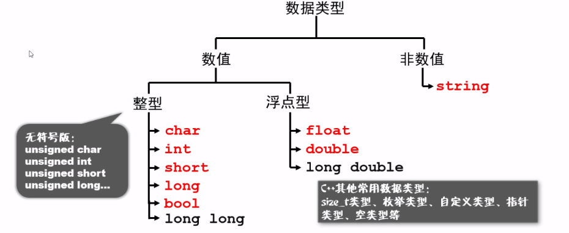

变量
命名规则
- 由 数字、字母和下划线 组成
- 不可以用下划线开头
- 不要使用拼音
- 尽量不要使用单个英文单词
- 提倡使用有正式含义的英文单词
内置类型
C++ 为程序员提供了种类丰富的内置数据类型和用户自定义的数据类型。下表列出了七种基本的 C++ 数据类型：
| 类型 | 关键字 |
|---|---|
| 布尔型 | bool |
| 字符型 | char |
| 整型 | int |
| 浮点型 | float |
| 双浮点型 | double |
| 无类型 | void |
| 宽字符型 | wchar_t |
其实 wchar_t 是这样来的：
typedef short int wchar_t; |
所以 wchar_t 实际上的空间是和 short int 一样。
一些基本类型可以使用一个或多个类型修饰符进行修饰：
- signed
- unsigned
- short
- long
下表显示了各种变量类型在内存中存储值时需要占用的内存，以及该类型的变量所能存储的最大值和最小值。
注意：不同系统会有所差异，一字节为 8 位。
注意：long int 与 int 都是 4 个字节，因为早期的 C 编译器定义了 long int 占用 4 个字节，int 占用 2 个字节，新版的C/C++ 标准兼容了早期的这一设定。
| 类型 | 位 | 范围 |
|---|---|---|
| char | 1 个字节 | -128 到 127 或者 0 到 255 |
| unsigned char | 1 个字节 | 0 到 255 |
| signed char | 1 个字节 | -128 到 127 |
| int | 4 个字节 | -2147483648 到 2147483647 |
| unsigned int | 4 个字节 | 0 到 4294967295 |
| signed int | 4 个字节 | -2147483648 到 2147483647 |
| short int | 2 个字节 | -32768 到 32767 |
| unsigned short int | 2 个字节 | 0 到 65,535 |
| signed short int | 2 个字节 | -32768 到 32767 |
| long int | 8 个字节 | -9,223,372,036,854,775,808 到 9,223,372,036,854,775,807 |
| signed long int | 8 个字节 | -9,223,372,036,854,775,808 到 9,223,372,036,854,775,807 |
| unsigned long int | 8 个字节 | 0 到 18,446,744,073,709,551,615 |
| float | 4 个字节 | 精度型占4个字节（32位）内存空间，+/- 3.4e +/- 38 (~7 个数字) |
| double | 8 个字节 | 双精度型占8 个字节（64位）内存空间，+/- 1.7e +/- 308 (~15 个数字) |
| long double | 16 个字节 | 长双精度型 16 个字节（128位）内存空间，可提供18-19位有效数字。 |
| wchar_t | 2 或 4 个字节 | 1 个宽字符 |
从上表可得知，变量的大小会根据编译器和所使用的电脑而有所不同。

输入输出
算数运算符
类型转换
课堂练习
打印整型的最大值
|
运行结果：
INT 最大值：2147483647 |